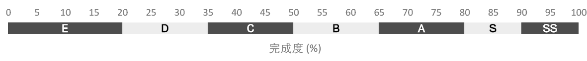
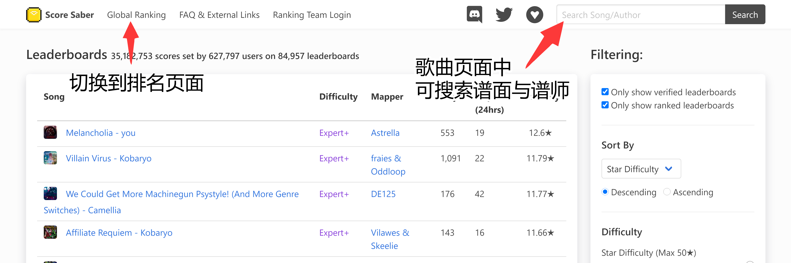
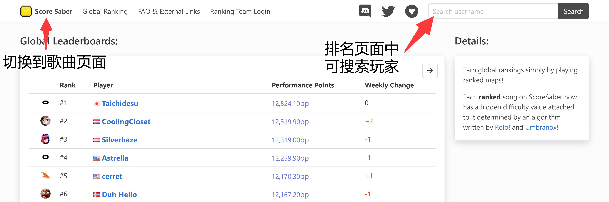
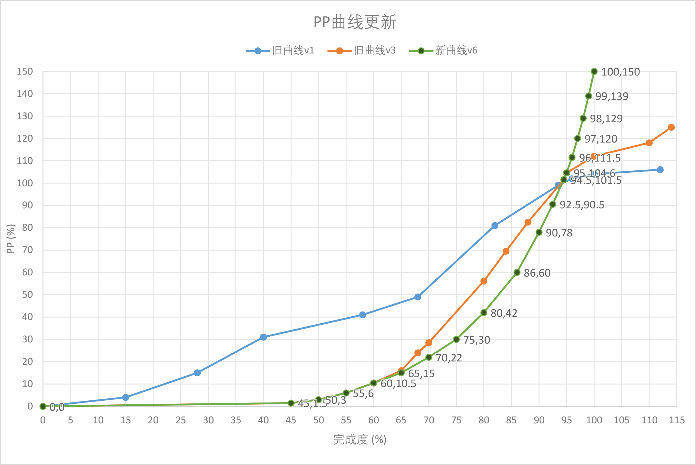
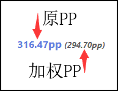
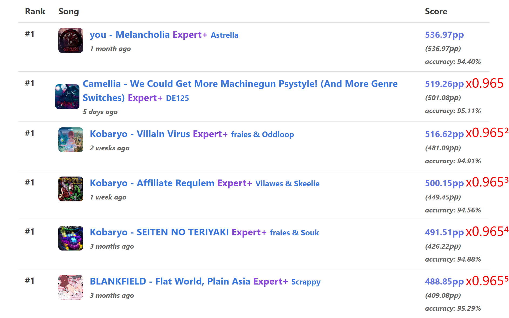
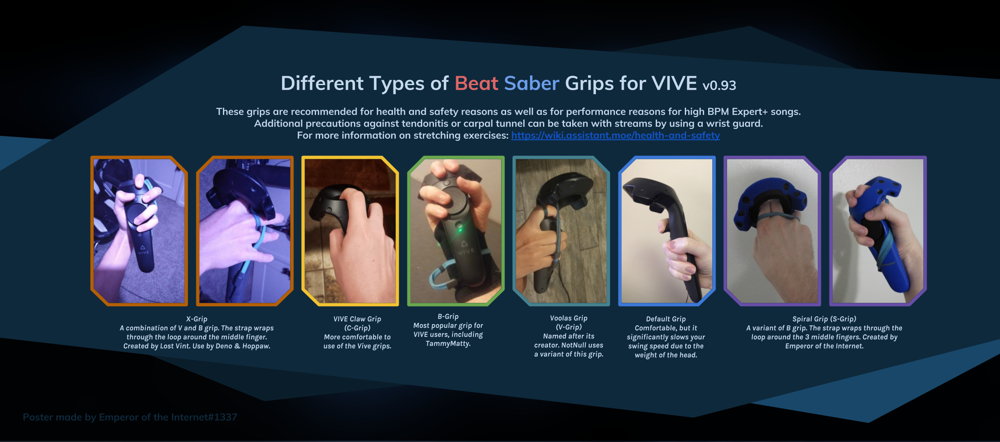
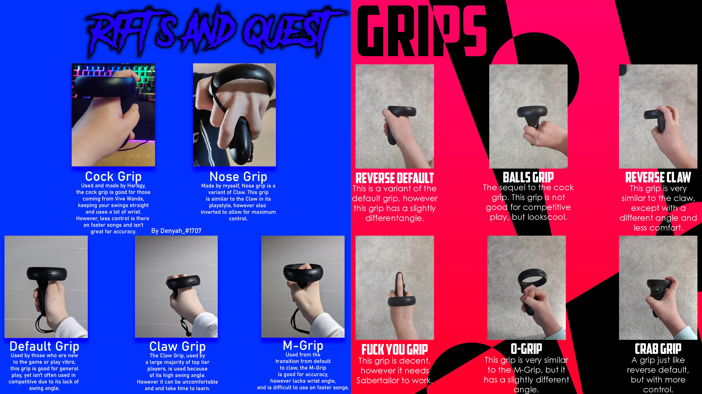
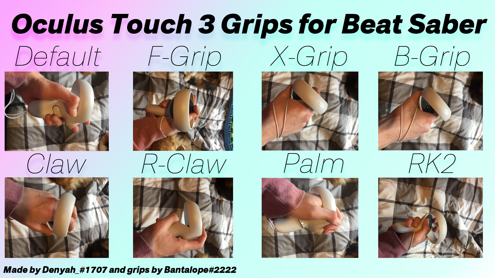

更好地了解Rank系统、计分和加成项等内容的指南
非常感谢WGzeyu提供的大量技术支持、ani提供的大量翻译支持，以及精神支持、waika提供的部分翻译支持，以及漠然轻寒提供的部分翻译支持以及翻译思路。
免责声明：这个指南于2019年2月17日制作（于2020年4-5月翻译），原作者会尽力保持其为最新，但仍然有某些信息不准确，甚至没有记录。本教程可以让大家更好的了解Rank计分系统和游戏的其他方面，但并不是这款游戏的完整教程，希望它对您有用。
更新：ScoreSaber现在已推出官方百科：https://wiki.scoresaber.com/
准度和计分
计分倍率
在游戏内，您可以在左侧看到您的分数乘数，它是一个被白色圆圈包裹（之后称之为外圈）的数字。
顾名思义，分数乘数会影响您的分数。在您开始打这首歌的时候，分数乘数为 x1 ，而外圈则会显示到下一个乘数的进度。当您击打一个方块并且分数乘数增加的时候，该方块的得分会被乘上最新的乘数，而不是之前的乘数。
分数乘数分别为：1x, 2x, 4x 和 8x。当您丢失连击时（包括丢失方块，击打方向错误，光剑使用错误，击打炸弹以及被墙覆盖），分数乘数将减半。
得分
在Beat Saber里得分并不简单，它不但取决于高连击和不丢失方块，还取决于每个方块的得分。
每个方块的最大击打分为 115 分（不乘分数乘数）。击打方块时，必须用正确的角度击打，并且必须将方块在中间一分为二，才能得到最佳分数，如下：
| 击打之前挥100° | 70分 |
| 击打之后挥60° | 30分 |
| 方块碎片两半一样大 | 15分 |
这表明了使用正确的角度挥剑的重要性，因为这样您才能获得更高的分数。但请记住，击打不完美（bad cut）永远比丢掉方块好，因为丢失方块会被记为0分，断掉连击以及扣血。
判定范围（hitboxes）
在Beat Saber中，大多数人认为方块本身就是判定范围，这是一个很常见的误解。尽管在之前是这样的，但是随着游戏更新，判定范围更改了不少次，图中是当前版本的判定范围。
如图，当前版本的判定范围在前方和边缘都加大了，所以这里建议您使用剑尖来击打，以便获得完美击打（best cut）。
据说在将来的版本中会添加“Pro Modifier”, 它可以判定范围变为方块本身。
准度
准确度可以这么理解：您目前的得分相对于满分的占比。
准确度可以在选歌页面的 Player Settings->Advanced HUD 开启，开启后准确度显示会在左侧，它以百分数和字母表示，它可以很好的反应您得分的能力。
准确度通过命中方块，分数乘数，还有丢失方块来计算。
下图列举了准确度和字母的关系：

感谢WGzeyu提供的图片
如上图，数字对应的是百分数（%），数字下方是对应的字母。
举个例子：如果您一首曲子打了85%，那么您对应字母的就是 S 。
Rank过程
Rank与Unrank
大多数人刚开始会花不少时间来了解ranked和unranked的区别,虽然谱子被rank并不会让它变得更好；但是这对于要进行排名的新玩家来说很重要。
Ranked谱面
Rank后的谱子会有一个难度等级（也被称为真实难度），这个等级用星号（⭐）来表示（详情见下方的 难度 项）。
每个等级都有对应数量的pp点（Performance Points）；玩家可以通过完成被rank的谱子来获得pp，而准确度越高，获得的pp越多。
Rank后的谱子大多数都是良好的谱子，不会出现塞爆，同向方块，以及其他难以击打的情况；注意：想在排行榜上升排名只有去打Rank的谱子才行。
对此有疑问如：pp是什么？rank组是什么？ 请继续看，下面详细讲述了这些问题。
Unranked谱面
所有人都可以使用 MediocreMapAssistant2（MMA2）这类谱面编辑器来做谱并且上传至Beatsaver，但是上传至Beatsaver并不需要审核，所以谱面的质量参差不齐。
而Uranked的谱子就是在Beatsaver发布并且没有经过 rank组 审核的谱子。
这类谱子并没有标注难度等级 ⭐，也就是说您并不知道它的真实难度（不知道它适不适合您）；也不知道具体谱面质量如何（总体质量可以通过观察点赞数和点踩数知晓）
请注意：谱面内的难度（例如Expert）并不代表真实难度，因为它是作者自定义的难度；
举个例子：在Beatsaver下载的谱子，可能会出现hard比expert+难的情况。
谱面Rank过程
有了Score Saber这个排名插件之后，需要许多高质量/可排名性强的谱面以便进行排名，于是就在discord成立了一个谱面审核小组（也就是rank组 之后称为 审核小组）。
审核小组创建了 审核标准 ，所以并不是所有的谱面都能被rank。ranked的谱面必须符合审核标准；如果审核标准更新后，该谱面不符合审核标准，将会被取消ranked（unrank）。
那么这些谱子是怎么被排名的呢？十分简单：谱师将制作好的谱子提交到discord的审核频道，审核人员（rankers）将会初审该谱子，如果有问题则告诉谱师需要修改的地方。
如果没有问题则会通过初审，之后由整个审核小组投票，如过没有反对票，则通过审核，投放到qualified队列，由玩家测试；若玩家没有意见则会正式发布，若玩家有意见则会重新审核后通知谱师修改。
审核小组通常会花费大量的个人时间来完成审核，但他们常常无缘无故地受到批评；所以请对他们表示感谢，以及...给他们一些爱♥
难度
上文提到了难度是由作者自定义的，也就是说您看到的expert+或者hard都不是该谱面真实难度，而是针对于这个谱面的难度（我个人称它为 虚假难度）；所以您下载unranked的谱子的时候，可能会出现easy难度比expert+还难的情况。
这时就需要一个真实难度来给ranked谱子标注难度，真实难度用⭐表示，如下图：
值得注意的是，unranked的谱子并没有真实难度（有例外，在下方做出了解释），如图：

所以，如果你的技术还不够好，笔者这里建议您去打一些真实难度比较低的谱子。
如果一首谱子被rank后又被unrank了，那么这首谱子也会保留星级；因为星级是rank组制定的
Rank系统（PP系统）
PP系统是rank中最难理解的一部分（其实很简单），实际上我发现大部分人都会对此产生一定错误的理解，所以现在才有了这条指南。
我应该如何获得PP分，排名系统如何运作？
你可以在 scoresaber.com 直接搜索你的steam昵称或oculus账户名（注意先切换到global ranking，默认页面是搜索歌曲名）


PP即Performance Points，通过打被rank的谱面得到（即俗称的pp曲）。一张谱面的PP值是rank组通过算法以及人工修正得到的，一般来说越难的谱面PP越高。
为了防止被恶意运用，该算法是保密的。你获得的pp与你的完成度挂钩，具体如下曲线（绿色新曲线）：

感谢WGzeyu提供的图片
PP系统如何工作，什么是加权PP？
玩家总pp的计算方法是 该曲获得 PP*0.965^(n-1) ，n为你所有刷过pp曲得到的pp数量从大到小排序的序数（详见图片）。
你会发现在你的scoresaber主页中歌曲后的pp数值有两个。蓝色的指你获得的pp（后统称获得pp），而括号内的灰色pp指计算上述计算过 PP*0.965^(n-1) 后得到的实际pp（后统称实际pp）。

为什么我的总PP不如我在新分数中获得的加权PP那样快？
每当你刷完一首新pp曲，总pp增加量并不等于这首歌的实际pp，因为排在这首歌之后的歌都会被往后挤一个位置并被多乘一次0.965^(n-1)。当你把某一首歌的完成度刷的更高，如果这首歌的排名位置没有变，则总pp增量等于实际pp增量。
如何改善并获得更多PP？
多练。首先你可以去你的scoresaber主页，将第一页的歌曲完成度提高；其次可以将你没有打过的歌，或者完成度不高的歌再打几遍。这里有有一个工具可以帮助你查询这些歌曲（打不开可能需要科学上网）：THISISMY PEEPEE
加成项
加成项和Ranked歌曲
从V12.0p1版本之后就有很多加分/减分选项啦！不同的选项有不同的效果，基本上分为加分和减分项。他们会改变谱面打完之后的分数。减分项在所有谱面中都适用，但是要注意在pp曲中加分项只有nuketime和kry的overkill有用。以下是具体解释：
No Fail (-0.50)
简称NF，秘技：血条消失之术。没有了血条你就不会死了。如标题所示NF会让你的得分减少一半，以下同理。
No Obstacles (-0.05)
移除所有的墙。
No Bombs (-0.10)
移除所有的炸弹。
Slower Song (-0.30)
谱面速度由100%->85% 。
Insta Fail (0.00)
Miss即死
Battery Energy (0.00)
MISS好几个就会死
Disappearing Arrows (+0.07)
方块上的箭头会逐渐消失。
Faster Song (+0.08)
谱面速度由100%->120%
Ghost Notes (+0.11)
方块会逐渐隐形 。
手柄握法
为什么要更换握法？
无论使用哪种VR设备游玩BeatSaber，握法都是很重要的，因为它可以改善游戏体验（尤其是VIVE玩家）。打速度较快，交叉较多的歌时，正常的握法就会出现一些问题，例如VIVE的手柄非常沉，所以需要用更大的力来击打，但是这会对你的手腕和手臂造成劳损。越玩到后期你越会发现用手腕打歌会比用手臂轻松得多。下面列举出了一些常用的握法，如果以下的握法都不合适的话，你可以使用对于你来说比较舒适的握法。
HTC Vive：

Oculus Rift CV1：

Oculus Rift S / Quest：

Oculus Quest 2：

Windows Mixed Reality：

Valve Index：
待补充，可联系QQ1165837178 或者 加入QQ群941873202 @群内xxxx果子狸来补充
一些提示和链接
关于BS排布的大致名称 - 大仓鼠
https://www.bilibili.com/video/BV1fA411E7VP/
一般人类驯化排位曲的励志录像 - 大仓鼠
https://www.bilibili.com/video/BV1xE411y7zi/
提示与技巧 ：
玩了这么久BeatSaber之后，我遇到了非常多的瓶颈；瓶颈真的很烦人，因为这个要很久才能突破。以下是一些提高自己的小技巧：
挑战自己
很多人都从来不去挑战难的谱面，而是一直打几张自己喜欢的，但是不得不说，去多下载一些其他歌，去多试试自己最打不来的东西。
不要只刷排名
虽然打rank是提高的途径，但是也不一定一直是。很多非rank的好谱面也可以提高你的水平（谱面可以找群里大佬问）；虽然打rank能提高排名，但是终究是和水平挂钩的。
记录自己的游戏过程
在自己某首歌分数右边有一个小小的回放箭头，多去看看回放，发现自己需要改进的常见错误是有益的。（此处ani更建议直播让大佬帮你看）
观看厉害的玩家回放并向他们提问
如果可以的话，可以尝试看一看别人的记录（非rank曲的回放记录不可用），尝试学一下别人的手法总是对自己有帮助的。也可以请教大佬，但是用敬语好好提问，不要阴阳怪气。
不要想太多
如果你一直刷不动某一张谱，不要整天想，这样容易心态爆炸，放着它以后再刷就好了。
练习难的排布
有些排布非常难，如新人杀手换轨等。如果你打不过某张谱面某种特别典型的排布，建议可以打开练习模式先慢速练习。前期一般依靠建立肌肉记忆来克服难的排布。
玩得开心
说到底这是个游戏，游戏是为了开心的。如果某一张破谱pp又高，又难打，自己实在难受的话，还是建议不要刷了（反正我会去刷），当你玩的开心的时候，你就会有迷之进步。
打分设备避坑
现在的VR设备，极限追踪速度还远跟不上人类的手速。所以，可能和印象不同，
一些人们认为追踪精确的设备，在打高BPM曲子快速挥动时追踪不一定还会好。
丢失追踪后，手柄会停下或者飞走。如果不想Fail，只能暂停。
可暂停又会影响节奏，如果你打算刷高难曲，建议尽量避免购买追踪差的设备。
最近甚至还出了一些不支持显卡直连，只能通过WiFi或USB串流打光剑的设备，甚至串流本身都没优化好，这类设备会带来很高的显示延迟，奇怪的手柄运动补偿，还可能会卡顿、掉帧，正常使用都会受到一些影响，也就只能糊弄一下没玩过的新手，更别说打分了。。。
推荐查看VR设备详细参数对比表以及PC-BS新手教程底部的VR避坑指南。